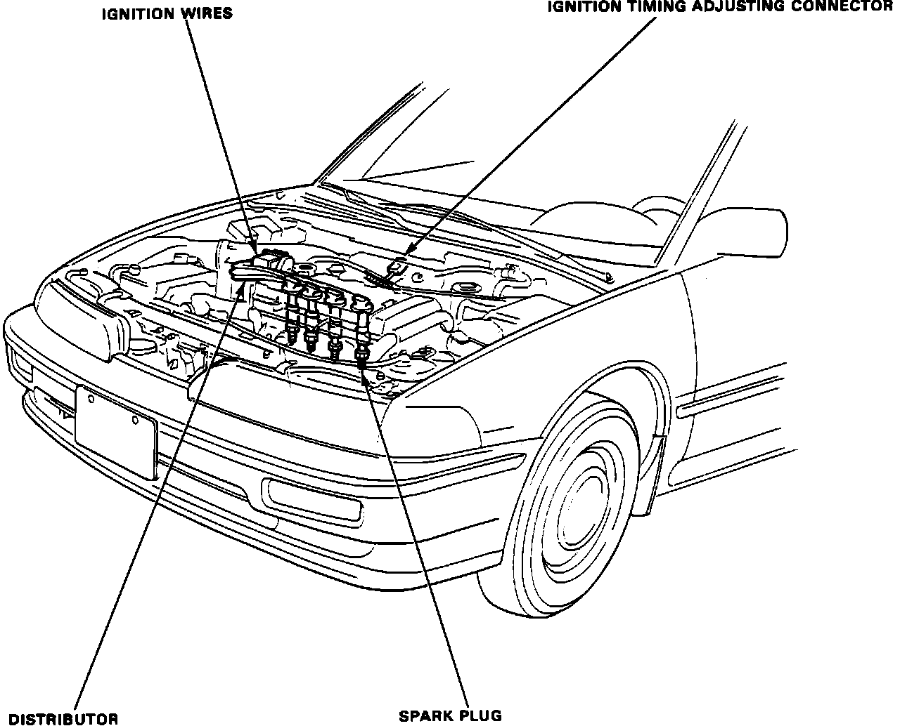

Electronic Noise Suppressor: Locations
Component Locations:

DISTRIBUTOR ASSEMBLY
Located at the right side of engine.
ELECTRONIC CONTROL UNIT (ECU)
Located under carpet, drivers side front floor panel.
IGNITER
Located inside the distributor assembly.
IGNITION COIL
Located inside the distributor assembly.
IGNITION TIMING ADJUSTING
Located under the side of the blower motor.
RADIO NOISE CONDENSER
Located inside the distributor assembly.
TDC/CYL/CRANK SENSOR
Located inside the distributor assembly.